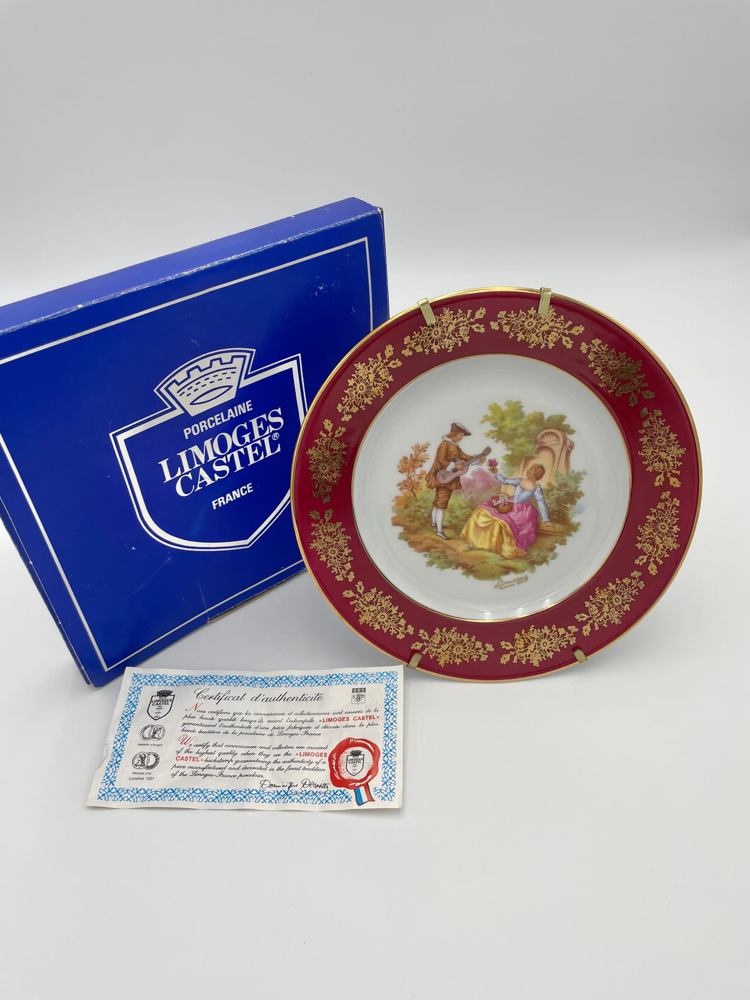
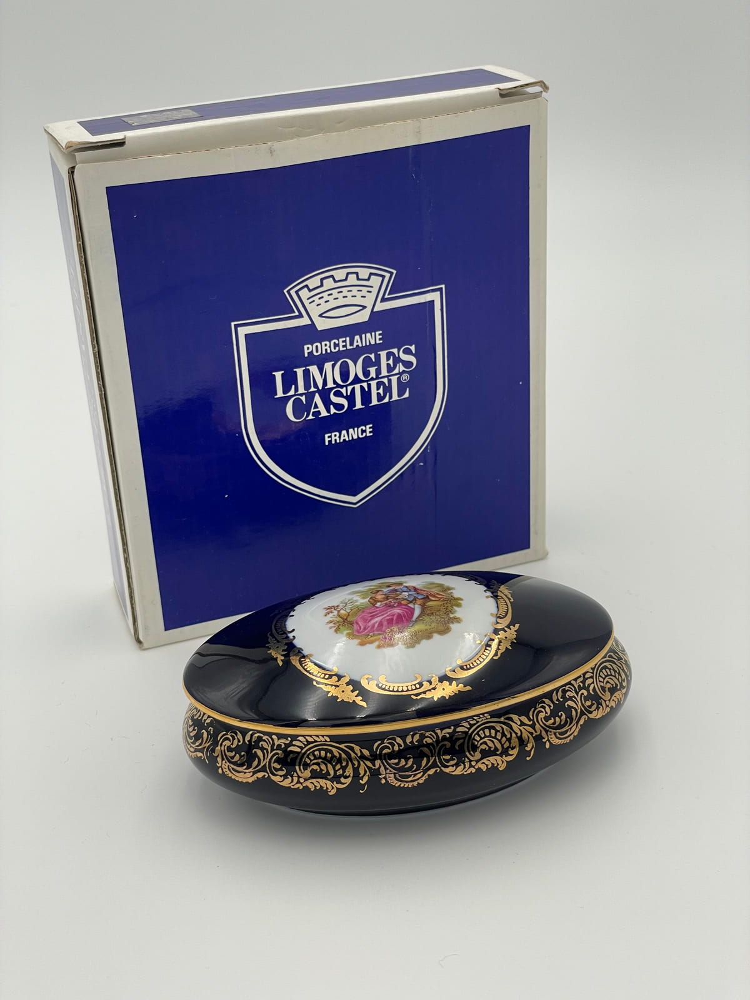
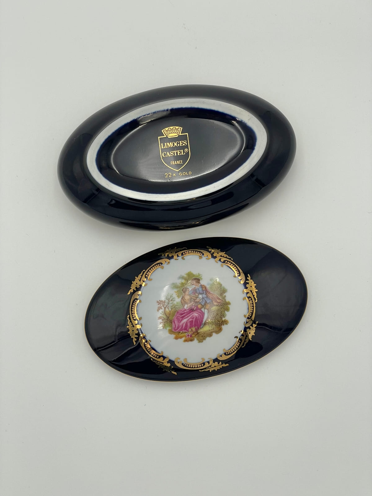
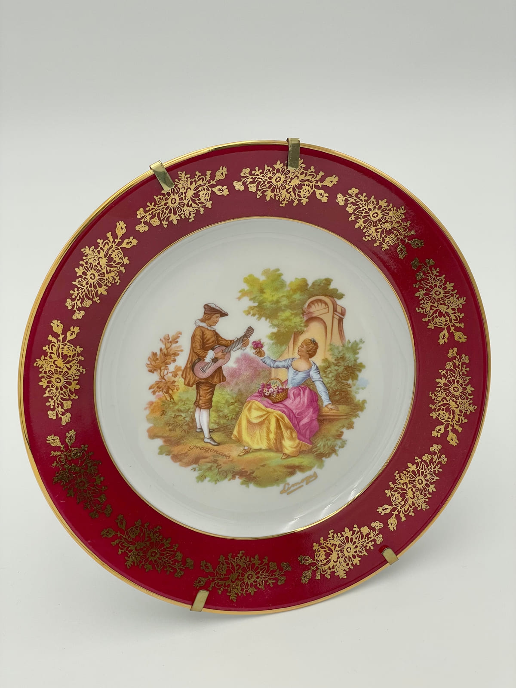
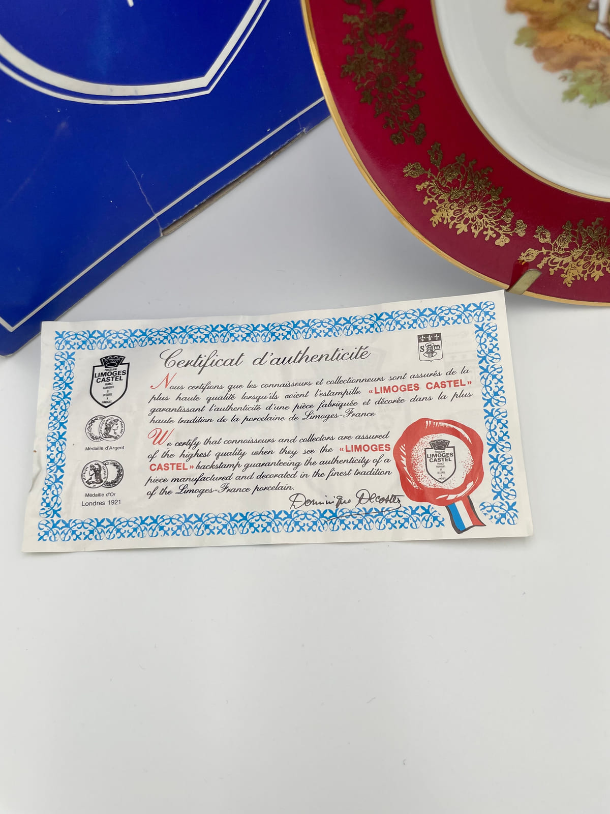
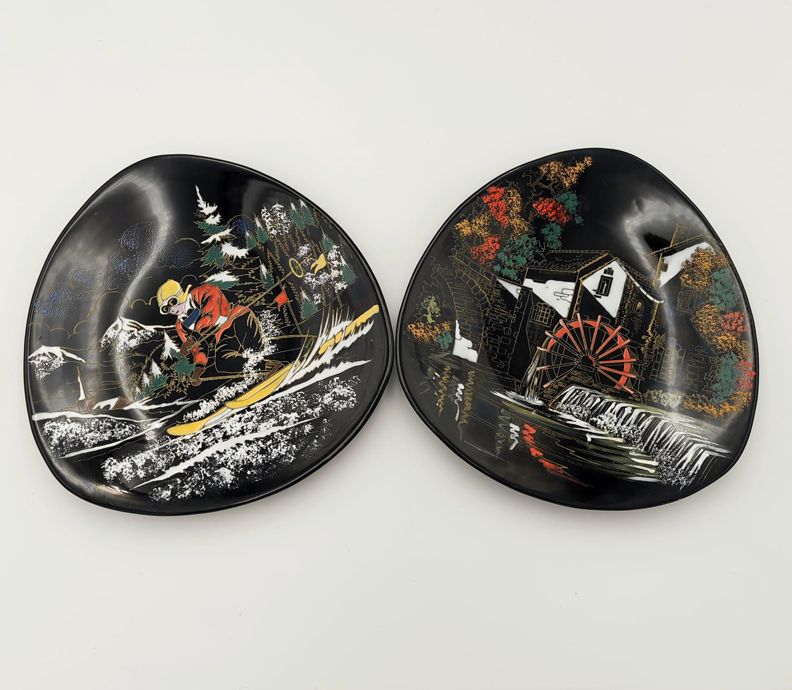
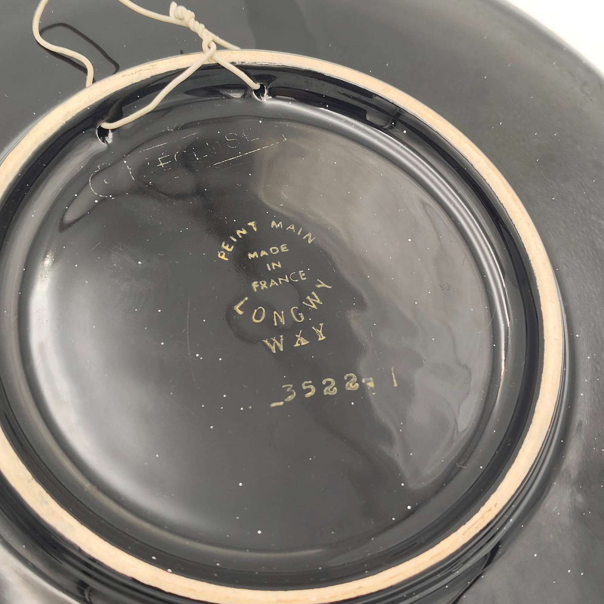
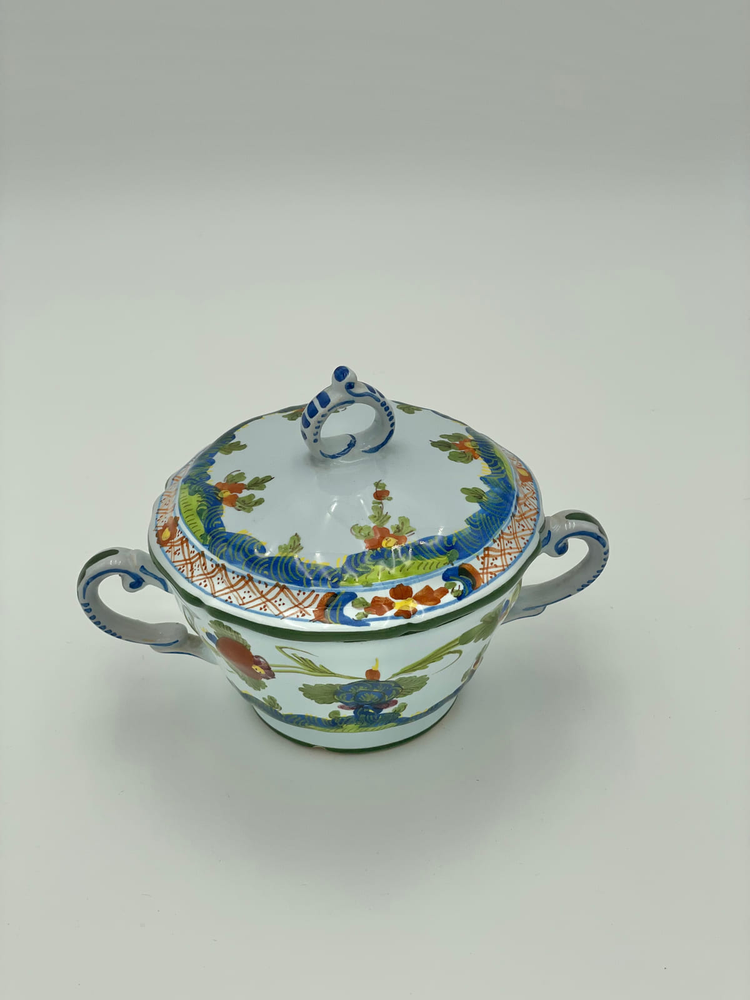
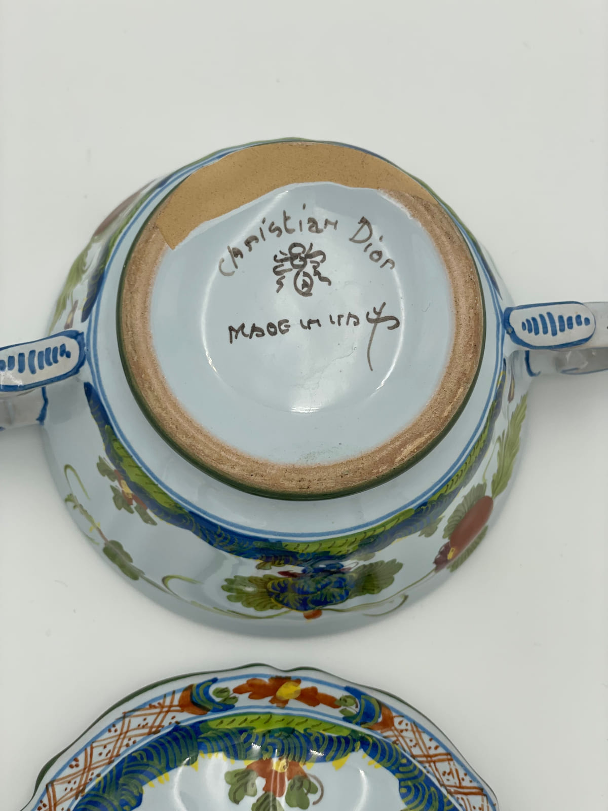

Collector’s Guide
French Design & Decorative Objects
Collectible French tableware, porcelain, ceramics and decorative objects selected for design, craftsmanship, maker attribution and surviving documentary evidence.
Decorative objects are the part of the collection where attribution is hardest and where the evidence, when it survives, is most interesting. A cocotte can be read from its metal; a porcelain box or a painted dish often gives up very little beyond its decoration unless a mark, a box or a piece of manufacturer’s paperwork has survived with it. This guide sets out what we look for, using four documented objects from our own collection. They are examples of a method, not a definition of French decorative arts.

What We Look For
We do not select a decorative object because it is old, or because it photographs well. Age on its own is not information, and decoration on its own rarely identifies anything: the same printed scene, the same gilt border and the same cobalt ground were used by many houses over long periods. What makes an object worth documenting is whether it can be read.
So we look for the things that carry evidence rather than atmosphere:
- An identifiable maker, house or decorating workshop — named on the object rather than inferred from its style.
- Marks: printed, painted, stamped or impressed, including size, pattern and reference numbers.
- Original packaging — presentation boxes, sleeves and labels, which often name the range and the house in the form used at the time of sale.
- Surviving manufacturer documentation: certificates, leaflets, guarantee slips and catalogue material.
- Materials, decorative technique and construction — how the ground was laid, whether decoration is painted or transfer-printed, how a lid seats, how a foot was finished.
- Distinctive design: a form or a decorative scheme specific enough to be traced, rather than a generic pattern.
Objects that still have their documentation are particularly useful, because the object and the paperwork can be examined against each other. That is why two of the four pieces below are published with their boxes and, in one case, its certificate.
Limoges Porcelain and Documented French Decorative Objects
Limoges porcelain turns up across the whole decorative field: dinner services, presentation plates, trinket and dresser boxes, small figural pieces and giftware. Because it is so widespread, and because the decoration is frequently transfer-printed rather than unique, the useful information is almost always on the underside or on the packaging rather than in the picture on the front.
The two pieces below are both marked for the same house, Limoges Castel, and both arrived with their original presentation boxes. One also kept its printed certificate. Together they let us look at a mark, a marketing claim and a piece of manufacturer’s paperwork on objects we can hold, which is considerably more than decoration alone would give us.
Collector’s note
Limoges is a city and a porcelain-producing region, not a manufacturer. “Limoges” on a base tells you where a piece was made or decorated, not who made it. The name that matters here is the house — in this case Limoges Castel — and even that does not, on its own, supply a date.
Limoges Castel — oval covered box
A small oval covered box with a very dark cobalt-blue ground, gilt scrollwork running round the sides and the lid, and a white reserve on the lid carrying a printed polychrome figural scene in a gilt cartouche. The interior is glazed in the same dark ground; the lid sits into a white, gilt-edged rim. It is a dresser or trinket box rather than a tableware piece.
It arrived in its original box: a blue printed presentation carton reading “PORCELAINE LIMOGES CASTEL FRANCE” around the same shield device that appears in gold on the porcelain itself. That correspondence between the mark on the object and the printing on the packaging is the sort of thing worth recording, because it fixes the form of the brand name the house was using when the piece was sold.


The mark, as it reads
Limoges Castel · France · 22 K Gold
Printed in gold inside a shield device on the base. “22 K GOLD” is a description of the gilding applied by the decorator — a manufacturer’s statement present on the object, not an assay we have verified. None of these lines carries a year, and we do not assign one.
Limoges Castel — decorative plate with its original documentation
The second piece is a presentation plate, photographed at the top of this page with the two things that came with it. The border is a deep red ground with gilt floral swags and a gilt rim line; the white centre carries a printed polychrome garden scene of two figures, one with a guitar. The plate is a wall or display piece, shown here on its hanging fitting.
The printed transfer itself carries a name within the scene, alongside a second small printed inscription reading “Limoges”. That records the source the composition was sold as being after, in the decorator’s own printing. It is not a signature, it does not make the plate a work by that painter, and it does not date it — we have not matched the composition to a specific original painting, and until we do we describe it as a printed scene.


The certificate is a printed bilingual slip, French above English. It states that the “LIMOGES CASTEL” backstamp guarantees the authenticity of a piece manufactured and decorated in the tradition of Limoges-France porcelain, and it reproduces the shield device, two award medals, a red seal motif and a printed signature. It is genuinely useful: it confirms the brand name, the terminology the house used about itself, and the fact that the backstamp was being presented to buyers as a guarantee.
Collector’s note
It is also worth being clear about what the certificate is. It is the house’s own document, not an independent assessment, and it certifies the meaning of the backstamp rather than anything about this individual plate. One of the medals it reproduces is captioned with a city and a year; that is a printed reference to a distinction the house claimed, and it is not the date of this plate. We have not dated the plate, and the certificate does not date it either.
Longwy — Hand-Painted French Decorative Ceramics
Longwy, in Lorraine, is the second identifiable French name in this part of the collection, and it works quite differently from the Limoges Castel pieces. Where those are porcelain with printed decoration and printed marks, these two are earthenware with a glossy black ground and painted decoration, and their marks are painted by hand on the underside.
The pair share a form — an irregular rounded, almost triangular dish — a black ground and the same decorative method: polychrome enamels with fine gilt and white line work drawing the detail. The subjects are deliberately unalike. One shows a skier coming down a slope through conifers; the other a watermill with a red waterwheel beside falling water. Seeing them together is the point: two different scenes executed in one house style is what makes them read as related production rather than as a coincidence.


The mark, as it reads
Peint Main · Made in France · Longwy
Painted by hand in a pale enamel. A further painted word sits under “Longwy”, and below that a painted reference number. We are transcribing only what is legible with confidence: the number cannot be read unambiguously in this photograph, so we record it as a painted reference number and do not reproduce it. Note also that the mark reads “Peint Main”, without the “à” that is often quoted — we follow the object.
That reference number is exactly the kind of evidence that could narrow the period, and exactly the kind that should not be guessed at. Matching it would require a Longwy pattern register, a period catalogue or another reliable record; until we consult one, the pieces are described by their mark, their form and their decoration, with no production date attached. Their style is not evidence of a date either: a black ground and a painted landscape were produced over a long span.
Christian Dior — French Design, Marked Made in Italy
The last object is here to make a point the first three cannot. “French design” and “made in France” are not the same claim, and a French house’s decorative objects were not necessarily produced in France. This is a Christian Dior covered ceramic vessel, and the mark painted under its foot says “Made in Italy”.
The piece is a white-ground covered vessel with two scrolled handles and a loop finial on the fitted lid, painted with polychrome floral ornament in blue, green and a rust orange, with hatched and scalloped bands framing the lid. The foot ring is left unglazed. We describe it as a covered decorative vessel rather than naming a function for it: the form would suit several uses, and none of them is documented for this object.


The mark, as it reads
Christian Dior · [painted device] · Made in Italy
Painted freehand in dark brown on the glazed base, inside the unglazed foot ring. Between the two inscriptions there is a small painted device which we have not identified; we record its presence and leave it at that rather than offering a reading of it.
Collector’s note
This object is associated with a French house and explicitly marked as Italian-made. Both facts belong in the description. We have not attributed it to a particular Italian pottery, because the mark does not name one and we have not consulted a source that would; we have not given it a production date; and we do not apply any later Dior homeware brand name to it, because nothing on the object or with it establishes that terminology for this piece.
Why Marks, Packaging and Documentation Matter
Twentieth-century decorative objects were made in large numbers, frequently with bought-in decoration, and often by houses that commissioned rather than manufactured. That makes the surviving paperwork disproportionately valuable — not because it proves more, but because it records things the porcelain cannot. The four objects on this page each contribute a different kind of evidence.
Printed mark
A house, not a place
The gold Limoges Castel shield names a house. “Limoges” alone would only have told us a region; the shield is what makes the piece attributable at all.
Marketing claim
“22 K Gold” on the base
A statement about the gilding, printed by the decorator. It tells us how the piece was positioned and sold. It is not an assay, and we do not repeat it as one.
Painted mark
“Peint Main / Made in France / Longwy”
Origin, house and decorating method, painted on the object. The reference number beneath it is the thread that could lead to a pattern record — once it can be read reliably.
Country of manufacture
“Made in Italy” under a French name
A single line that prevents a whole class of wrong assumptions, and a reminder to read the base before describing where something was made.
Original boxes add a further layer: they carry the brand name in the form used at the point of sale, and they sometimes name a range or a series that has since disappeared from the object itself.
Original packaging is part of the evidence
Keep the box, the certificate and the leaflet when they survive. They document branding, terminology, presentation and the claims a manufacturer was making, and once separated from the object they are almost never reunited with it.
But read them critically. Packaging and paperwork establish only what they actually say, and they say it in the manufacturer’s own voice. A certificate that guarantees a backstamp is not a dated provenance; a printed award is not a production year; a box can outlive one object and be paired with another. Documentation is evidence to be weighed against the object, not a substitute for examining it.
How We Attribute a Decorative Object
The order matters more than the conclusion. We work from the object outwards, and we stop when the evidence stops.
- Examine the object first: marks, labels, signatures, reference numbers, materials, decorative technique, construction and dimensions — recorded as observations, not yet as conclusions.
- Record what came with it: boxes, certificates, leaflets and labels, described in the condition they survive in.
- Compare those observations with reliable manufacturer, archival or institutional material where it exists — and note plainly where it does not.
- State the attribution at the strength the evidence supports, and leave the date open if nothing dates it.
Two shortcuts are worth naming because they are so easy to take. Dating an object from its style is unreliable: decorative conventions were repeated for decades and are still reproduced. Attributing an object because it resembles something else seen online compounds whatever error that listing already contained. Neither is evidence, and neither appears in our descriptions.
Research in progress
Production periods: not established for any of the four objects on this page. Each is described by its marks, its materials and its surviving documentation, and each date is left open until a period catalogue, pattern register, advertisement or comparable record is located.
Where This Fits in Our Research
The method on this page is the same one we apply to cookware: examine the object, transcribe the mark, record the documentation, and separate what is observed from what is inferred. The other guides work through it on different material.
Read our guide to vintage French copper cookware